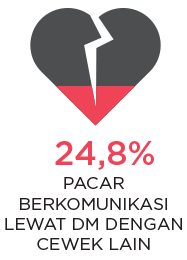

Hubungan yang tadinya berjalan lancar, tiba-tiba mendapat gejolak hanya karena sebuah postingan di media sosial. Realita seperti ini sering banget ditemukan, terutama di kalangan remaja, yang salah satu sumber pertengkaran bisa berasal dari media sosial.
Penyebab Berantem dengan Pacar di Medsos
“Aku orangnya iseng dan ngeselin. Ketika ada temennya pacar, aku sengaja jailin dan bercandain di medsos buat dia cemburu padahal aku bercanda saja sih. Terus pacar marah deh, he-he.”
(Debo Andryos, 20 tahun, selebriti)
Putusnya suatu hubungan, kadang juga disebabkan oleh aktivitas di media sosial, seperti:

Begitu pun setelah putus, media sosial masih menjadi saksi dari perjalanan hidup kita. Ketika mengawali hubungan dengan PDKT di media sosial, mengabadikan hubungan dengan pacar di media sosial, ketika berakhir pun, peranan media sosial masih ada.
“Kalau unfollow gitu childish banget ya, putus kalau alasannya benar pun harus baik-baik juga.”
(Vanesha Prescilla, 18 tahun, selebriti)
Permasalahan lainnya, bagaimana dengan foto yang sudah terlanjur di-upload semasa masih pacaran?
“Hapus foto sih iya, tapi unfollow enggak. Palingan pas enggak unfollow terus lihat mantan udah sama pacar baru rada nyesek sih ya, ha-ha.”
(Gusti Rayhan, 16 tahun, selebriti)
“Menghapus foto mantan dari media sosial pernah karena itu salah satu cara untuk move on. Selain itu, kita juga saling menjaga perasaan orang yang lagi dekat sama kita atau yang lagi dekat sama mantan kita.”
(Kania Farradita, 22 tahun, Universitas Jenderal Soedirman)
Pun berlanjut setelah putus. Rasa ingin tahu membuat 56% responden mengaku masih sering mencari tahu info soal mantan, entah itu karena sedang iseng atau tiba-tiba teringat mantan.
“Stalking mantan itu seperti proses rehabilitasi bagi diri kita karena enggak mungkin kita benar-benar langsung move on. Jadi step by step bisa dilalui dengan bantuan stalking. Tetapi dari awal kita harus tahu perasaan kita juga. Kalau sakit hati karena stalking mantan, mending enggak usah dilakukan sama sekali dan fokus move on.”
(Salma Sania - SMA NU 1 Gresik, 18 tahun)
Pada akhirnya, kita harus paham bahwa hubungan yang sebenarnya itu terjadi antara dua orang. Kadang kita suka lupa menghabiskan waktu bersama pacar dengan saling bicara langsung, dan seringnya berkomunikasi lewat media sosial.
Dan, kamu, bagaimana dengan hubunganmu dan pacar?